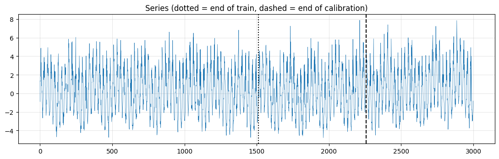
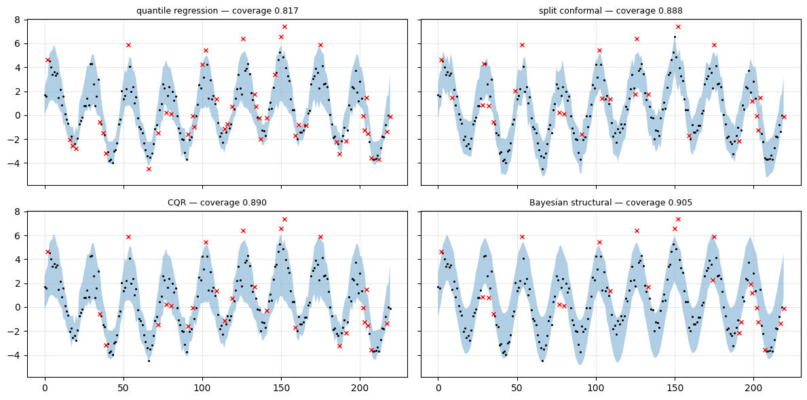
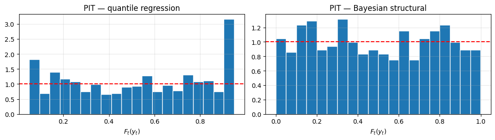
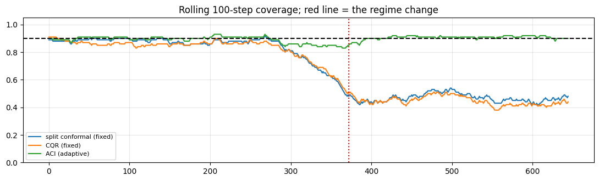
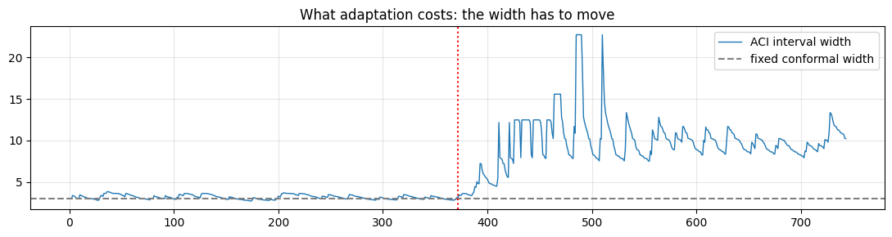

Walkthrough - Three Ways to Build Intervals#
One series, one point predictor, three ways to attach uncertainty to it:
Quantile regression — train directly on the pinball loss.
Conformal prediction — split conformal and CQR, on top of the same models.
Bayesian structural — a local-level state-space model whose filter derives the predictive variance.
Then we score them properly (pinball, CRPS, Winkler), plot calibration, and break them with a regime change.
Companion lessons: L01, L02, L03.
import matplotlib.pyplot as plt
import numpy as np
from sklearn.ensemble import GradientBoostingRegressor
RNG = np.random.default_rng(11)
plt.rcParams.update({"figure.figsize": (11, 3.6), "axes.grid": True, "grid.alpha": 0.3})
ALPHA = 0.1 # target 90% intervals
Part 1 - A series with heteroskedastic noise#
Daily seasonality, a slow level drift, and — the part that matters — noise whose scale depends on the state (loud during the “busy” part of the cycle). A single global \(\sigma\) cannot be right everywhere.
N = 3000
t = np.arange(N)
season = 3 * np.sin(2 * np.pi * t / 24) + 1.2 * np.sin(2 * np.pi * t / 168)
level = np.cumsum(RNG.normal(0, 0.02, N))
scale = 0.4 + 0.9 * (1 + np.sin(2 * np.pi * t / 24)) ** 2 / 4 # state-dependent noise
y = season + level + RNG.normal(0, 1, N) * scale
# supervised framing: predict y[t] from the previous 24 lags + calendar features
L = 24
X = np.array([y[i - L:i] for i in range(L, N)])
X = np.c_[X, np.sin(2 * np.pi * t[L:] / 24), np.cos(2 * np.pi * t[L:] / 24)]
Y = y[L:]
# strictly chronological split - train / calibration / test (Ch.1 L03)
n = len(Y)
i_tr, i_ca = int(0.5 * n), int(0.75 * n)
Xtr, Ytr = X[:i_tr], Y[:i_tr]
Xca, Yca = X[i_tr:i_ca], Y[i_tr:i_ca]
Xte, Yte = X[i_ca:], Y[i_ca:]
print(f"train {len(Ytr)} calibration {len(Yca)} test {len(Yte)}")
plt.plot(t, y, lw=0.5)
plt.axvline(L + i_tr, c="k", ls=":"); plt.axvline(L + i_ca, c="k", ls="--")
plt.title("Series (dotted = end of train, dashed = end of calibration)")
plt.tight_layout()
train 1488 calibration 744 test 744

Part 2 - Method 1: quantile regression#
Fit the pinball loss at \(\tau\in\{0.05, 0.5, 0.95\}\). Each quantile is its own function of the features, so heteroskedasticity is handled for free — no guarantee of coverage, though.
def fit_gbr(tau=None):
kw = dict(n_estimators=200, max_depth=3, learning_rate=0.08, random_state=0)
if tau is None:
return GradientBoostingRegressor(loss="squared_error", **kw).fit(Xtr, Ytr)
return GradientBoostingRegressor(loss="quantile", alpha=tau, **kw).fit(Xtr, Ytr)
mean_model = fit_gbr()
qlo_model, qhi_model = fit_gbr(ALPHA / 2), fit_gbr(1 - ALPHA / 2)
qr_lo, qr_hi = qlo_model.predict(Xte), qhi_model.predict(Xte)
qr_lo, qr_hi = np.minimum(qr_lo, qr_hi), np.maximum(qr_lo, qr_hi) # fix any crossing
Part 3 - Method 2: conformal#
Split conformal on absolute residuals gives one constant width. CQR conformalises the quantile model above, keeping its shape and gaining the coverage guarantee.
# split conformal around the mean model
res = np.abs(Yca - mean_model.predict(Xca))
k = int(np.ceil((len(res) + 1) * (1 - ALPHA))) - 1
qhat = np.sort(res)[k]
mu_te = mean_model.predict(Xte)
sc_lo, sc_hi = mu_te - qhat, mu_te + qhat
# CQR: nonconformity = how far outside the predicted quantile band the truth fell
ca_lo, ca_hi = qlo_model.predict(Xca), qhi_model.predict(Xca)
E = np.maximum(ca_lo - Yca, Yca - ca_hi)
qcqr = np.sort(E)[int(np.ceil((len(E) + 1) * (1 - ALPHA))) - 1]
cqr_lo, cqr_hi = qr_lo - qcqr, qr_hi + qcqr
print(f"split-conformal half-width: {qhat:.2f} (constant)")
print(f"CQR correction: {qcqr:+.2f} added to each side of the quantile band")
split-conformal half-width: 1.48 (constant)
CQR correction: +0.25 added to each side of the quantile band
Part 4 - Method 3: Bayesian structural (local level + seasonal)#
A linear-Gaussian state-space model (Chapter 2 Lesson 01) with a level and a 24-step seasonal component. The one-step predictive variance \(S_t = HP_{t|t-1}H^\top + R\) is the interval — no residual calibration involved, which is exactly why it is only as honest as \(Q\) and \(R\).
def bsts_predict(y, m=24, q_level=0.02 ** 2, q_seas=1e-4, r=1.0):
"""Local level + dummy seasonal SSM; returns one-step predictive mean and std."""
d = 1 + (m - 1) # level + m-1 seasonal states
F = np.zeros((d, d))
F[0, 0] = 1.0
F[1, 1:] = -1.0 # seasonal recursion: sum over a cycle = 0
F[2:, 1:-1] = np.eye(m - 2)
H = np.zeros(d)
H[0] = H[1] = 1.0
Q = np.zeros((d, d))
Q[0, 0], Q[1, 1] = q_level, q_seas
x = np.zeros(d)
x[0] = y[:m].mean()
P = np.eye(d) * 10.0
mus, sds = np.zeros(len(y)), np.zeros(len(y))
for i, obs in enumerate(y):
x, P = F @ x, F @ P @ F.T + Q
S = H @ P @ H + r
mus[i], sds[i] = H @ x, np.sqrt(S)
K = P @ H / S
x = x + K * (obs - H @ x)
P = P - np.outer(K, H @ P)
return mus, sds
# fit r (observation noise) on the training portion by matching residual variance - a crude MLE
bs_mu, bs_sd = bsts_predict(y[L:], r=1.0)
r_hat = np.var(Y[:i_tr] - bs_mu[:i_tr])
bs_mu, bs_sd = bsts_predict(y[L:], r=r_hat)
z = 1.645 # 90%
bs_lo, bs_hi = (bs_mu - z * bs_sd)[i_ca:], (bs_mu + z * bs_sd)[i_ca:]
print(f"estimated observation variance: {r_hat:.2f}")
estimated observation variance: 1.27
Part 5 - Score them#
Coverage alone is meaningless (predict \(\pm\infty\) and win). Report coverage, width, pinball and the Winkler interval score together.
def pinball(y, q, tau):
return np.mean(np.maximum(tau * (y - q), (tau - 1) * (y - q)))
def winkler(y, lo, hi, alpha=ALPHA):
w = hi - lo
pen = (2 / alpha) * ((lo - y) * (y < lo) + (y - hi) * (y > hi))
return np.mean(w + pen)
methods = {"quantile regression": (qr_lo, qr_hi),
"split conformal": (sc_lo, sc_hi),
"CQR": (cqr_lo, cqr_hi),
"Bayesian structural": (bs_lo, bs_hi)}
print(f"{'method':<22}{'coverage':>10}{'width':>9}{'pinball':>10}{'Winkler':>10}")
for name, (lo, hi) in methods.items():
cov = np.mean((Yte >= lo) & (Yte <= hi))
pb = 0.5 * (pinball(Yte, lo, ALPHA / 2) + pinball(Yte, hi, 1 - ALPHA / 2))
print(f"{name:<22}{cov:>10.3f}{np.mean(hi - lo):>9.2f}{pb:>10.4f}{winkler(Yte, lo, hi):>10.3f}")
print(f"\ntarget coverage: {1 - ALPHA:.2f}")
method coverage width pinball Winkler
quantile regression 0.817 2.63 0.1070 4.278
split conformal 0.888 2.97 0.1073 4.292
CQR 0.890 3.12 0.1020 4.079
Bayesian structural 0.905 3.76 0.1186 4.746
target coverage: 0.90
sl = slice(0, 220)
fig, ax = plt.subplots(2, 2, figsize=(12, 6), sharex=True, sharey=True)
for a, (name, (lo, hi)) in zip(ax.ravel(), methods.items()):
a.plot(Yte[sl], "k.", ms=2.5)
a.fill_between(np.arange(len(Yte))[sl], lo[sl], hi[sl], alpha=0.35)
miss = (Yte < lo) | (Yte > hi)
a.plot(np.arange(len(Yte))[sl][miss[sl]], Yte[sl][miss[sl]], "rx", ms=5)
a.set_title(f"{name} — coverage {np.mean((Yte >= lo) & (Yte <= hi)):.3f}", fontsize=9)
plt.tight_layout()

The constant-width band is the tell: split conformal is too wide in the quiet phase and too narrow in the loud one, and its marginal coverage hides both. Look at where the red misses cluster.
Part 6 - Conditional coverage#
Marginal coverage is the easy test. Break it down by the noise regime — the quiet third of the cycle vs. the loud third — and the constant-width methods fall apart.
sc_te = scale[L:][i_ca:]
bins = np.quantile(sc_te, [0, 1 / 3, 2 / 3, 1.0])
print(f"{'method':<22}{'quiet':>9}{'medium':>9}{'loud':>9}")
for name, (lo, hi) in methods.items():
row = []
for a, b in zip(bins[:-1], bins[1:]):
m = (sc_te >= a) & (sc_te <= b)
row.append(np.mean((Yte[m] >= lo[m]) & (Yte[m] <= hi[m])))
print(f"{name:<22}" + "".join(f"{v:>9.3f}" for v in row))
method quiet medium loud
quantile regression 0.810 0.819 0.823
split conformal 0.984 0.927 0.754
CQR 0.903 0.879 0.887
Bayesian structural 0.988 0.911 0.815
Part 7 - Calibration: the PIT histogram#
For the two methods that give a full predictive distribution, transform each observation by its own predictive CDF. Calibrated ⟹ uniform. A U-shape means over-confidence; a hump means over-dispersion.
from scipy.stats import norm
pit_bs = norm.cdf(Yte, bs_mu[i_ca:], bs_sd[i_ca:])
# an empirical PIT for the quantile model: interpolate through the fitted quantiles
taus = [0.05, 0.25, 0.5, 0.75, 0.95]
qs = np.column_stack([fit_gbr(tau).predict(Xte) for tau in taus])
pit_qr = np.array([np.interp(yv, np.sort(row), taus) for yv, row in zip(Yte, qs)])
fig, ax = plt.subplots(1, 2, figsize=(11, 3.2))
for a, (p, name) in zip(ax, [(pit_qr, "quantile regression"), (pit_bs, "Bayesian structural")]):
a.hist(p, bins=20, density=True, edgecolor="w")
a.axhline(1.0, c="r", ls="--")
a.set_title(f"PIT — {name}"); a.set_xlabel("$F_t(y_t)$")
plt.tight_layout()

Part 8 - Break it: a regime change in the test period#
Triple the noise scale halfway through the test set — a sensor degradation, a change of platform, a new operating condition. Nothing in the calibration data warned about it.
Yte2 = Yte.copy()
half = len(Yte2) // 2
Yte2[half:] = mean_model.predict(Xte)[half:] + (Yte2 - mean_model.predict(Xte))[half:] * 3.0
print(f"{'method':<22}{'before':>9}{'after':>9}{'overall':>9}")
for name, (lo, hi) in methods.items():
inside = (Yte2 >= lo) & (Yte2 <= hi)
print(f"{name:<22}{inside[:half].mean():>9.3f}{inside[half:].mean():>9.3f}{inside.mean():>9.3f}")
method before after overall
quantile regression 0.812 0.368 0.590
split conformal 0.882 0.487 0.684
CQR 0.874 0.465 0.669
Bayesian structural 0.906 0.546 0.726
Adaptive conformal (ACI) recovers the long-run guarantee#
\(\alpha_{t+1}=\alpha_t+\eta(\alpha-\text{err}_t)\): miss too often and the interval widens; over-cover and it tightens. The promise changes from per-prediction coverage to long-run average coverage — which is what survives a regime change.
def aci(y, mu, residuals, alpha=ALPHA, eta=0.02):
a_t, los, his, errs = alpha, [], [], []
pool = list(residuals)
for i in range(len(y)):
a_c = min(max(a_t, 0.001), 0.999)
q = np.quantile(pool[-500:], 1 - a_c)
lo, hi = mu[i] - q, mu[i] + q
err = int(not (lo <= y[i] <= hi))
a_t = a_t + eta * (alpha - err)
pool.append(abs(y[i] - mu[i])) # online: yesterday's residual joins the pool
los.append(lo); his.append(hi); errs.append(err)
return np.array(los), np.array(his), np.array(errs)
aci_lo, aci_hi, aci_err = aci(Yte2, mu_te, res)
inside = (Yte2 >= aci_lo) & (Yte2 <= aci_hi)
print(f"{'ACI (eta=0.02)':<22}{inside[:half].mean():>9.3f}{inside[half:].mean():>9.3f}{inside.mean():>9.3f}")
w = 100
roll = lambda ins: np.convolve(ins.astype(float), np.ones(w) / w, "valid")
plt.figure(figsize=(11, 3.4))
plt.plot(roll((Yte2 >= sc_lo) & (Yte2 <= sc_hi)), label="split conformal (fixed)")
plt.plot(roll((Yte2 >= cqr_lo) & (Yte2 <= cqr_hi)), label="CQR (fixed)")
plt.plot(roll(inside), label="ACI (adaptive)")
plt.axhline(1 - ALPHA, c="k", ls="--"); plt.axvline(half, c="r", ls=":")
plt.ylim(0, 1.05); plt.legend(fontsize=8)
plt.title(f"Rolling {w}-step coverage; red line = the regime change")
plt.tight_layout()
ACI (eta=0.02) 0.901 0.892 0.897

plt.figure(figsize=(11, 3))
plt.plot(aci_hi - aci_lo, lw=1, label="ACI interval width")
plt.axhline(np.mean(sc_hi - sc_lo), c="0.5", ls="--", label="fixed conformal width")
plt.axvline(half, c="r", ls=":")
plt.legend(); plt.title("What adaptation costs: the width has to move")
plt.tight_layout()

What to take away#
Observation |
Lesson |
|---|---|
Split conformal hits marginal coverage with a constant width |
the guarantee is real — and marginal |
Its conditional coverage is badly wrong in both tails of the noise regime |
always break coverage down by regime (Ch.6 L02) |
CQR keeps the quantile model’s shape and gets the guarantee |
usually the right default |
The BSTS interval needs no calibration set, but is only as good as \(Q,R\) |
model-based uncertainty inherits model error |
Every fixed method under-covers after the regime change |
exchangeability is the assumption that fails |
ACI restores long-run coverage, at the cost of a moving width |
long-run ≠ per-period: check the rolling plot, not the average |
Exercises#
Sweep ACI’s \(\eta\) over \(\{0.005, 0.02, 0.1\}\) and plot rolling coverage. Where is the adaptation-speed / stability trade-off?
Replace the constant-width conformal score with a normalised one, \(s_i=|y_i-\hat\mu_i|/\hat\sigma_i\), using a model for \(\hat\sigma\). Does conditional coverage improve to CQR levels?
Compute CRPS by sampling from the BSTS predictive Gaussian and compare method ranking against the Winkler score. Do they agree?
Then attempt Challenge 01 - Regime-Change Coverage.